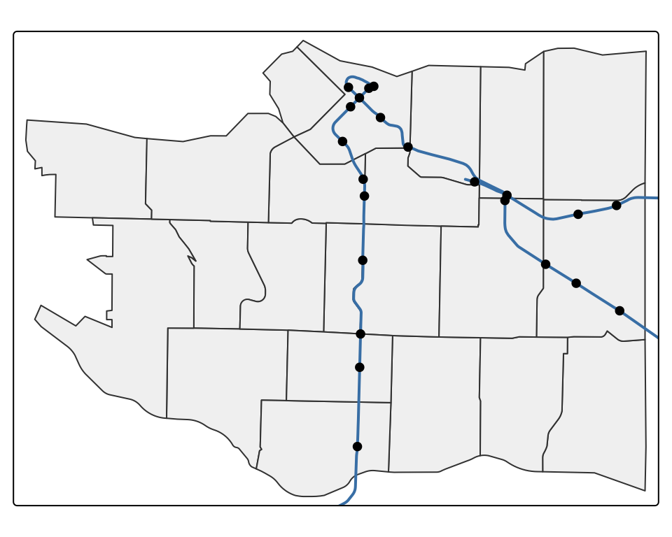
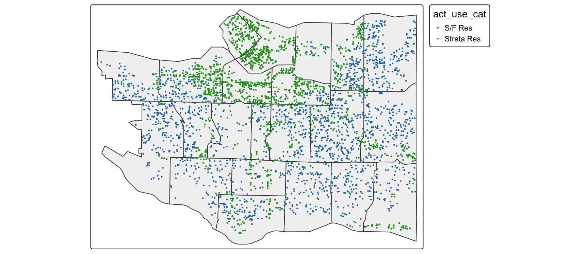

library(tidyverse)
library(sf) # points, polygons, coordinate systems, spatial joins
library(tmap) # maps
library(VancouvR) # City of Vancouver open dataCOMM 407 · Points, polygons, and coordinate systems
31 October 2026
Open opendata.vancouver.ca and find Rapid transit stations. How can you tell that the data are spatial?
Geom column, and geo_point_2d holds latitude and longitude.Most of the portal is like this: in October 2026, 139 of its 200 datasets had a location.
get_cov_data() from VancouvR downloads a dataset from the portal. The ID is the part of the web address after dataset/, here rapid-transit-stations. No API key is needed.
| ID | What it holds |
|---|---|
local-area-boundary |
The 22 local areas |
rapid-transit-stations, rapid-transit-lines |
SkyTrain stations and lines |
zoning-districts-and-labels |
Zoning districts |
designated-floodplain |
Areas at risk of flooding |
issued-building-permits |
Building permits, with project values |
non-market-housing |
Social and co-op housing projects |
Simple feature collection with 3 features and 4 fields
Geometry type: POINT
Dimension: XY
Bounding box: xmin: -123.1219 ymin: 49.22639 xmax: -123.0559 ymax: 49.27436
Geodetic CRS: WGS 84
# A tibble: 3 × 5
station geom geo_local_area geo_point_2d geometry
<chr> <chr> <chr> <chr> <POINT [°]>
1 Yaletown - Roundh… "{\"… Downtown 49.27436225… (-123.1219 49.27436)
2 Langara - 49th Av… "{\"… Oakridge 49.22638691… (-123.1163 49.22639)
3 Nanaimo "{\"… Renfrew-Colli… 49.24827221… (-123.0559 49.24827)It prints as a tibble, with five header lines on top and a geometry column at the end. geom and geo_point_2d are the portal’s text copies of the location; sf uses only geometry.
| Header line | What it says |
|---|---|
… with 3 features and 4 fields |
3 rows (features) and 4 columns besides geometry |
Geometry type: POINT |
Each row is one point |
Bounding box |
The smallest box around all the points |
Geodetic CRS: WGS 84 |
The coordinate reference system: what the numbers mean |
<POINT [°]> under geometry says the same in short: points, in degrees (°).
stations is an sf object, and still a tibble (tbl_df), so dplyr verbs work on it.geometry column is an sfc (simple feature column): one shape per row.(-123.1219 49.27436), is x, then y: longitude, then latitude. These are the same kind of numbers as lon and lat in bca.Simple feature collection with 3 features and 1 field
Geometry type: POLYGON
Dimension: XY
Bounding box: xmin: -123.1781 ymin: 49.20015 xmax: -123.0233 ymax: 49.29349
Geodetic CRS: WGS 84
# A tibble: 3 × 2
name geometry
<chr> <POLYGON [°]>
1 Arbutus Ridge ((-123.1526 49.25723, -123.1649 49.25743, -123.1649 49.257…
2 Grandview-Woodland ((-123.077 49.29025, -123.0678 49.2901, -123.0626 49.28954…
3 Killarney ((-123.0236 49.20015, -123.04 49.20396, -123.0423 49.204, …Each of the 22 local areas is a POLYGON: the corners of its boundary in order, ending at the corner it started from. A LINESTRING, such as a SkyTrain line, also lists points but does not close.
Geodetic CRS: WGS 84 in the header means the numbers are degrees of longitude and latitude. Its code is EPSG 4326. Without a CRS, −123.1 is just a number; with one, it is a place.
The last section of this deck shows other CRSs and why they matter.
Simple feature collection with 2 features and 1 field
Geometry type: POINT
Dimension: XY
Bounding box: xmin: -123.1163 ymin: 49.22639 xmax: -123.116 ymax: 49.23347
Geodetic CRS: WGS 84
# A tibble: 2 × 2
station geometry
<chr> <POINT [°]>
1 Langara - 49th Avenue (-123.1163 49.22639)
2 Oakridge - 41st Avenue (-123.116 49.23347)We kept only station, but geometry came along: it is sticky.
# A tibble: 3 × 2
geo_local_area n
<chr> <int>
1 Downtown 8
2 Renfrew-Collingwood 5
3 Oakridge 2Drop the geometry when you only need a table: counts and summaries run faster, and the output is shorter.
To make sense of spatial data, map it. tmap draws sf objects: tm_shape() names the data, and tm_dots() draws the points. Without the city underneath, 22 dots say little.

tm_polygons() draws areas, tm_lines() lines, and tm_dots() points. Each tm_shape() starts a layer, and later layers draw on top, as in ggplot. The first layer sets the map’s extent, so the Expo Line stops at the city boundary.
tmap has no aes(). A column name, such as "skytrain", is mapped and gets a legend. Any other value, such as "blue", is a setting. A misspelled column name stops with an error.
tm_text() puts each name at the centre of its area. tm_labels() moves labels apart, like geom_text_repel(), so a name can land in the next area: use it for points, not areas.
Other portals let you download files instead, in formats like those on the Export tab.
data/Park_Inventory.geojson..shp, .shx, .dbf, .prj, …). Keep them together and read the .shp.parks <- st_read("data/Park_Inventory.geojson", quiet = TRUE)
parks_shp <- st_read("data/Park_Inventory/Park_Inventory.shp", quiet = TRUE)
c(geojson = nrow(parks), shapefile = nrow(parks_shp)) geojson shapefile
402 402 Both hold Burnaby’s parks, from Burnaby Open Data.
bca <- read_rds("data/bca262.rds")
bca |>
filter(juris_label == "City of Vancouver") |>
select(neigh_label, price, lon, lat) |>
head(3)# A tibble: 3 × 4
neigh_label price lon lat
<chr> <dbl> <dbl> <dbl>
1 Cedar Cottage 131987 -123.0910 49.25619
2 Cedar Cottage 248000 -123.1019 49.25207
3 Knight 358000 -123.0680 49.22723A plain tibble: no header, no geometry column, no CRS. To R, lon and lat are just numbers. It cannot map the sales, tell which local area each is in, or measure how far each is from SkyTrain.
sales <- bca |>
filter(juris_label == "City of Vancouver", year(sale_date) == 2025,
!is.na(lon), !is.na(lat)) |>
select(folioid, act_use_cat, price, floorarea, lon, lat) |>
st_as_sf(coords = c("lon", "lat"), crs = 4326)
nrow(sales)[1] 7662coords: the x column first (longitude), then y (latitude).crs = 4326: the numbers are degrees of longitude and latitude (WGS 84), as in the City’s data.st_as_sf() stops at a missing coordinate, so drop those rows first.
Deck 14 matches these sales to local areas and measures how far each is from SkyTrain.
A. Stops with an error B. Puts the points in the wrong place
xmin ymin xmax ymax
49.2 -123.2 49.3 -123.0 B. Latitude is now −123, which cannot exist: latitudes run from −90 to 90. R made the points anyway. Map new points before you use them.
van_2025 <- bca |>
filter(juris_label == "City of Vancouver", year(sale_date) == 2025)
van_2025 |>
anti_join(local_areas, by = join_by(neigh_label == name)) |>
count(neigh_label, sort = TRUE) |>
head(3)# A tibble: 3 × 2
neigh_label n
<chr> <int>
1 Downtown South 563
2 Grandview 505
3 Collingwood 405Can we match sales to local areas by name, with a join from deck 07? Only 10 of BC Assessment’s 30 neighbourhood names match a City local area: 4,137 of 7,666 sales get none. Even a match can mislead: BC Assessment’s Kerrisdale is not the City’s. Match by location instead: st_join() in deck 14.
| EPSG code | Name | Units | Use it for |
|---|---|---|---|
| 4326 | WGS 84 | degrees | Longitude and latitude: bca, City open data, GPS |
| 26910 | NAD83 / UTM zone 10N | metres | Distances, buffers, and areas in BC |
| 3347 | Statistics Canada Lambert | metres | Maps of all of Canada |
stations, local_areas, and sales all use 4326. Degrees are fine for maps, but distances and buffers need metres.
xmin ymin xmax ymax
-123.122 49.210 -123.032 49.286 xmin ymin xmax ymax
491134 5450757 497685 5459264 st_bbox() gives the smallest box around the data. In metres, the stations span 6.6 km east to west and 8.5 km north to south.
vpd_file <- file.path("data", "crimedata_csv_AllNeighbourhoods_2026",
"crimedata_csv_AllNeighbourhoods_2026.csv")
crimes <- read_csv(vpd_file)
crimes |> select(TYPE, X, Y) |> head(3)# A tibble: 3 × 3
TYPE X Y
<chr> <dbl> <dbl>
1 Mischief 492733.7 5458332.
2 Mischief 495224.3 5458012.
3 Mischief 491125.7 5458434.The Vancouver Police Department’s guide says the coordinates are in “latitude and longitude” on one page and in “UTM Zone 10” on another. An X of 492,734 cannot be a longitude: these are metres.
crimes_sf <- crimes |>
filter(X != 0) |>
st_as_sf(coords = c("X", "Y"), crs = 26910)
crimes_sf |> st_transform(4326) |> st_bbox() |> round(3) xmin ymin xmax ymax
-123.215 49.203 -123.024 49.312 With crs = 4326, the same code runs without an error, and every crime gets an impossible longitude of about 490,000.
X is 0 when VPD withholds the location. In this file, that is every offence against a person and the one homicide: 496 crimes. A map of the remaining points shows no violent crime at all.
COMM 407